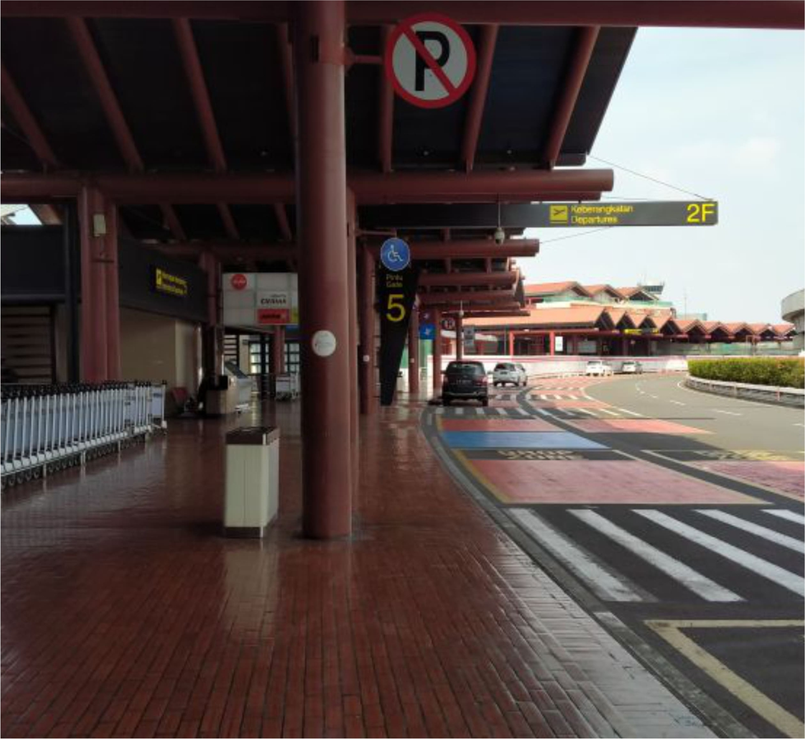

Travel
#Perjalanan 1: Dari Stasiun Hingga Menyentuh Awan
Perjalanan ini dimulai dari rumah, saat sore hari yang cerah membawa angin sepoi-sepoi yang lembut. Ada ketenangan dalam udara sore itu,...
Travel
#Perjalanan 2: Transit Singkat di Singapura
Pesawat kami mendarat dengan mulus di Bandara Changi, salah satu bandara tersibuk dan terbaik di dunia. Saat roda pesawat menyentuh landasan, suara dari kabin menandakan bahwa kami tela...
Travel
#Perjalanan 3: Dari Singapura, Pattaya, Hingga Bangkok
Perjalanan di pagi hari yang tenang, sekitar jam 6 waktu Singapura, menandai dimulainya petualangan baru kami. Saya dan kakak baru saja bangun dari tidur singkat di Bandara Changi, masih...

Travel
#Perjalanan 4: Hari Penuh Kejutan
Pagi itu, Bangkok menyapa dengan langit cerah, meskipun hawa kota yang sibuk masih terasa di sekeliling. Tubuh terasa sedikit lelah setelah malam...
Travel
#Perjalanan 5: Keindahan Wat Arun, Icon Siam, dan Perjalanan Pulang
Hari terakhir di Thailand datang dengan perasaan yang campur aduk. Ada rasa senang karena hari ini kami akan mengunjungi Wat Arun, salah satu kuil...
Travel
Perjalanan ke GBK: Nonton Kualifikasi Piala Dunia Indonesia vs Irak
Hari itu merupakan salah satu hari yang sangat kami nantikan, khususnya bagi saya dan kakak. Setelah beberapa waktu merencanakan, akhirnya...